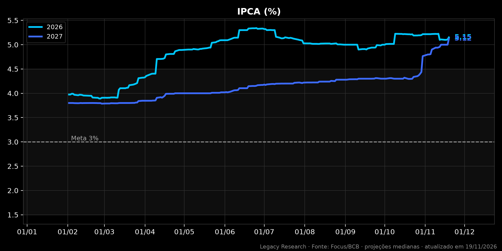

Painel · atualização automática
Boletim Focus
O que o mercado espera para a economia brasileira. Os dados vêm do Boletim Focus, do Banco Central, e esta página se atualiza sozinha toda segunda-feira.
Carregando os dados…

Leitura da Legacy
Escreva aqui, toda semana, uma ou duas frases com a leitura de vocês sobre as projeções.
Fonte: Banco Central do Brasil – Boletim Focus. Projeções medianas do mercado. Conteúdo de estudo e opinião, não é recomendação de investimento.